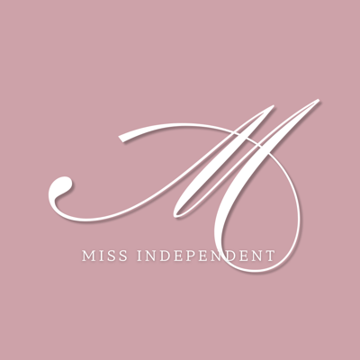
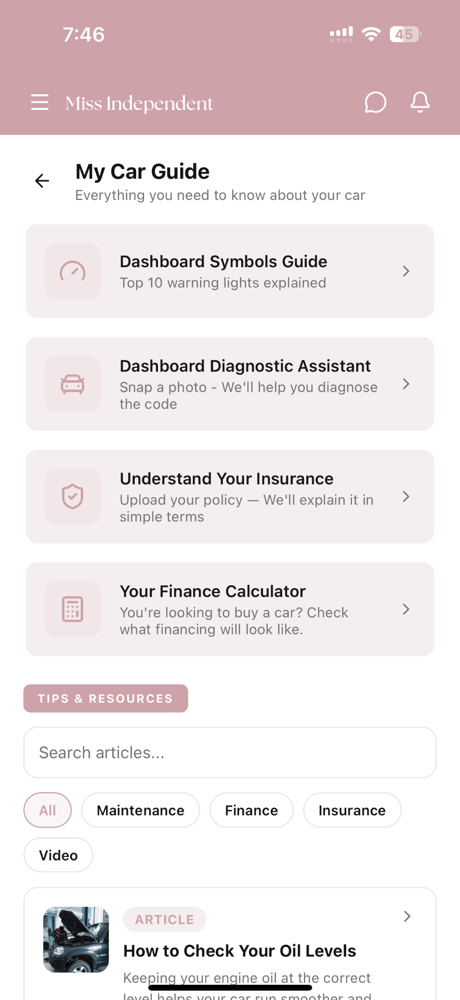

The need
Knowing what to check, understanding warning lights and asking informed maintenance questions are practical driving skills. Women receive a hands-on space to learn and practise them, with accessible follow-up resources.

Fund an Empower Academy programme helping 120 adult women in the UAE understand everyday car care and act with confidence. Practical workshops and digital learning through Miss Independent, over six months.

Knowing what to check, understanding warning lights and asking informed maintenance questions are practical driving skills. Women receive a hands-on space to learn and practise them, with accessible follow-up resources.
Practical learning supported beyond the workshops. Participants practise basic checks, understand maintenance requirements and learn when to seek qualified help.
A delivered community programme connecting support for women with car-care literacy and safety, recognized ADNOC sponsorship and documented beneficiary, learning and follow-up results.
Recruit and register beneficiaries, design and deliver six car-care workshops, and provide materials, experts and coordination. The package targets 120 women, with capacity for 20 per workshop.
Set up the programme’s car-care learning space in the app, manage its content and support participants for six months. Beneficiaries retain access during the sponsorship, with post-workshop follow-up and feedback collection.
Produce twelve short videos and twelve learning cards, and deliver two expert follow-up Q&A sessions. The programme team leads delivery, documentation and reporting.
The Miss Independent allocation funds programme learning, content access and related follow-up. This education component appears as a separate package budget line.
Target capacity: 20 women per workshop; programme participation objective of 120.
Produce and publish programme-related car-care education.
Participant questions and reinforcement after practical learning.
Programme resources and participant follow-up within Miss Independent.
Beneficiaries, attendance, learning completion and use of educational resources.
Knowledge checks, confidence and follow-up results, with evidence and consented participant stories.
Success objectives: 80% of enrolled participants complete the final assessment; 70% of assessment completers improve their car-care knowledge; and a 30-day follow-up measures retained knowledge and confidence in applying it. Report sample sizes and actual results.
| Empower Academy programme | AED 50,000 |
|---|---|
| Miss Independent — programme learning and follow-up | AED 50,000 |
| Educational content production | AED 30,000 |
| Two expert follow-up sessions | AED 10,000 |
| Impact measurement and reporting | AED 10,000 |
| Total sponsorship | AED 150,000 |
AED 50,000 is allocated to Miss Independent’s education component: programme-space setup, content management, access, follow-up and related updates.
Prepare curriculum, materials and the digital learning space; register beneficiaries.
Deliver workshops, publish content and run follow-up sessions, with monthly reports.
Complete 30-day follow-up, assess learning and confidence, and issue the impact report.

A mechanical engineer and automotive presenter with practical-skills education experience through Girls Mechanic Team and Hands-On Heroes. Empower Academy brings that experience to the programme; Miss Independent extends it through digital follow-up.
نطلب رعاية أدنوك لبرنامج Empower Academy لتمكين 120 امرأة بالغة في الإمارات من فهم أساسيات العناية بالسيارة والتصرف بثقة. ورش عملية ومتابعة تعليمية عبر Miss Independent، لمدة ستة أشهر.
معرفة ما يجب فحصه، وفهم إشارات السيارة، وطرح أسئلة الصيانة مهارات يحتاجها السائقون. يقدم البرنامج للنساء مساحة عملية لتعلمها وتجربتها، مع موارد متابعة سهلة.
تعلم عملي ودعم يستمر بعد الورش. تتدرب المشاركات على فحوص بسيطة، وفهم متطلبات الصيانة، ومعرفة متى يطلبن مساعدة مختصة.
برنامج مجتمعي تتولى جوانا وفريقها تنفيذه وتوثيقه، يربط دعم النساء بمعرفة السيارة والسلامة، مع اعتراف واضح بأدنوك كراعٍ وتقرير يوثق المستفيدات والتعلم والمتابعة.
استقطاب وتسجيل المستفيدات، وتصميم وتقديم ست ورش للعناية بالسيارة، وإعداد المواد والخبراء والتنظيم. تستهدف الباقة 120 امرأة، بسعة 20 مشاركة لكل ورشة.
إعداد مساحة تعليم السيارة الخاصة بالبرنامج في التطبيق، وإدارة محتواها ومتابعة المشاركات لمدة ستة أشهر. تبقى المواد متاحة للمستفيدات خلال الرعاية، مع متابعة بعد الورشة وجمع التغذية الراجعة.
إنتاج اثني عشر فيديو قصيرًا واثنتي عشرة بطاقة معرفة، وتقديم جلستين للمتابعة والأسئلة مع مختص. يقود فريق البرنامج التنفيذ والتوثيق والتقرير.
تغطي حصة Miss Independent مساحة تعلم البرنامج والمحتوى والمتابعة المرتبطة به. يظهر تمويل هذا الجزء التعليمي ضمن الباقة كبند مستقل.
سعة مستهدفة: 20 مشاركة لكل ورشة؛ هدف البرنامج 120 مشاركة.
إنتاج ونشر محتوى مرتبط بالبرنامج وبالعناية بالسيارة.
أسئلة المشاركات وتثبيت التعلم بعد التجربة العملية.
مواد البرنامج ومتابعة المشاركات داخل Miss Independent.
المستفيدات والحضور وإكمال التعلم واستخدام المواد التعليمية.
نتائج اختبارات المعرفة والثقة والمتابعة، مع الأدلة وقصص المشاركة المأذون بها.
أهداف النجاح: إكمال 80% من المشاركات المتعلّمات للتقييم النهائي، وتحسن معرفة السيارة لدى 70% ممن أكملن التقييم، ومتابعة بعد 30 يومًا تقيس الاحتفاظ بالمعرفة والثقة في تطبيقها. يُعرض حجم العينة والنتائج الفعلية في التقرير.
| برنامج Empower Academy | درهم 50,000 |
|---|---|
| Miss Independent — مساحة التعلم ومتابعة البرنامج | درهم 50,000 |
| إنتاج المحتوى التعليمي | درهم 30,000 |
| جلستا المتابعة مع مختص | درهم 10,000 |
| قياس الأثر والتقارير | درهم 10,000 |
| إجمالي الرعاية | AED 150,000 |
50,000 درهم مخصصة للجزء التعليمي في Miss Independent: إعداد مساحة البرنامج وإدارة المحتوى والوصول والمتابعة والتحديثات المرتبطة به.
تجهيز المنهج والمواد ومساحة التعلم الرقمية، وتسجيل المستفيدات.
تنفيذ الورش ونشر المحتوى وجلسات المتابعة، مع تقارير شهرية.
استكمال متابعة 30 يومًا وتقييم التعلم والثقة وإصدار تقرير الأثر.
مهندسة ميكانيكية ومقدمة محتوى سيارات، وخبرة في تعليم المهارات العملية من خلال Girls Mechanic Team وHands-On Heroes. يقدم برنامج Empower Academy هذه الخبرة، ويجعل Miss Independent وسيلة المتابعة الرقمية.